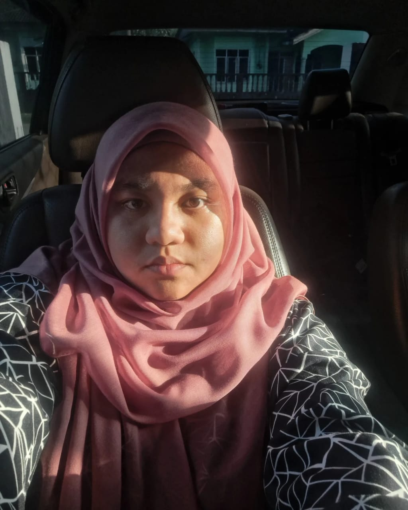
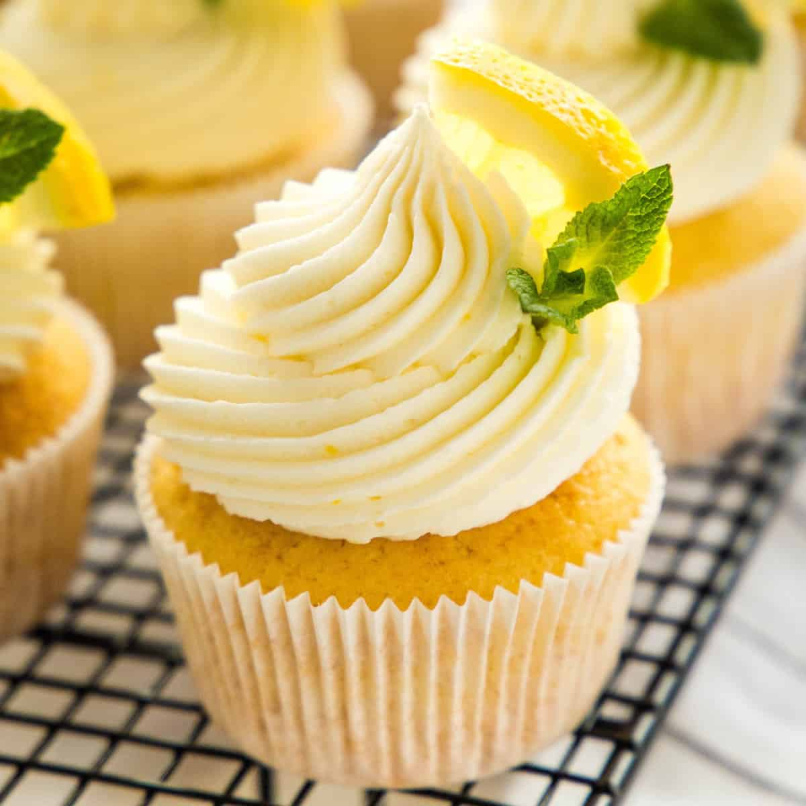

Name: Nor Aziah Binti Nor Azman
Birth date: 7 March 2002
State: Terengganu
As a human, I can describe myself as moderate loner. I love my alone time. Abandonment doesn't really hurts me anymore. As a human we should just be grateful for what we have and enjoy it while we can moderately. I enjoy the accompaniment of my classmates everytime. I don't have much to share about myselves as I consider myself to be boring. My mbti identify as ISTP by the way. I enjoy other foreign music instead of kpop.
Perhaps, u would like to know of my likings or perhaps not then just skip it.😇
In terms of food consummation, I am not fond of caffeine. I would prefer something chocolate, matcha, or berries with moderate sweetness. My heat resistance are low which means I can't really eat spicy food. Fixing thing hasn't alway be much problem for me as I enjoy figuring how things works plus if I can't figure it out, there's google to browse 😄 or just ask my family. In terms of work, I hate it when people do it last minute like few minutes before submitting and they still wanna change it. Last minute like a day before is okay but if its last minute literally like few minutes before submission is a red flag as a team. Furthermore so when their problems are inflicted on others. I also enjoy painting and baking when I'm too bored that made my brother tease me about changing my room color again in near future 😄 . Sometimes I just draw houses or just make paper house for fun especially on semester break. I also enjoy evening or morning stroll at any villages nearby. Sometimes my dad ask me to run errand or do some data filling and registration.
I enjoy driving. Personally, I don't think driving is just a necessity for a person to get to somewhere and I don't think a car is just a car. It requires skills. Ever since the first day I started driving, it is for the purpose of assisting my parents whose work require them to drive a lot everywhere. I'm inspire by my dad to cultivate my driving skills so to not be a nuisance to others and thus be a good driver. I guess it gets better now since he barely told on me but I'm still far from good driver. In driving or doing anything in life, we must remember that are more better and skilled people out there so don't be so arrogant to others cause sometime their method or idea is better than yours. I realize there a lot more skilled driver out there who are better and really inspire me to be more succesfull. I have loved cars since kid, however we need money to have cars and I'm still tryna frigure out how to get that much money for my dream car 🤧.

I have always loved Ferarri Roma and loving it more this year as Ferrai realease the Spider version which is a convertible. I simply just love the idea of feeling the air. I guess this is also one of the reason for my likings to bike. Its just a good stress release for me. I like Roma not just because its a Ferarri but Roma simply just give the elegant look whilst SF90 gives of the vibe of energetic, young feeling which makes it suitable for people with young heart and it certainly is a sexy car in a way 😏 . I also loved JDM cars such as 86GT or Skyline. However no cars can be better than an SUV. We can always have better view with an SUV especially with the power offered in an SUV and a comfy ride. Personally I think we shouldn't hate on cars no matter how old it is cause the car have been of service while it lived.
However, I somehow got entangled with bike as I think its faster. Bike are way more convenient except for grocery shopping. I came upon realization that I can always get sleepy easily on highways especially whenever i drive and they say, its cause you've known how it feels like when riding bike. Besides, its easier to get parking. I've always went out to refresh my brain from assignments besides brainstorming new things to put in.
I never think that I've experienced the real world and I know the real working world are more challenging. There are always better person out there somewhere on earth. I've seen a person being harsh on my dad cause of politics difference when we just ask for direction 🤷 . That just shows how stupidity and arrogance blinded a person cause that time their politic party was a leading party.
I certainly enjoy food but I'm very selective with restaurant as I have delicate tummy which get sick easily and I want the quality for my food. The price should worth the quality. So far, Victoria Station serve great potato. I often makes it on my own cause people just don't sell it. However I've never makes cupcakes althought that's what I've been wanting to have most and I don't buy cause local seller no longer make cupcakes with traditional icing style. My cousin once bake a Lemon cupcakes for his son's birthday and it was so good as it was my dream tatse of how a lemon cake should be like.
